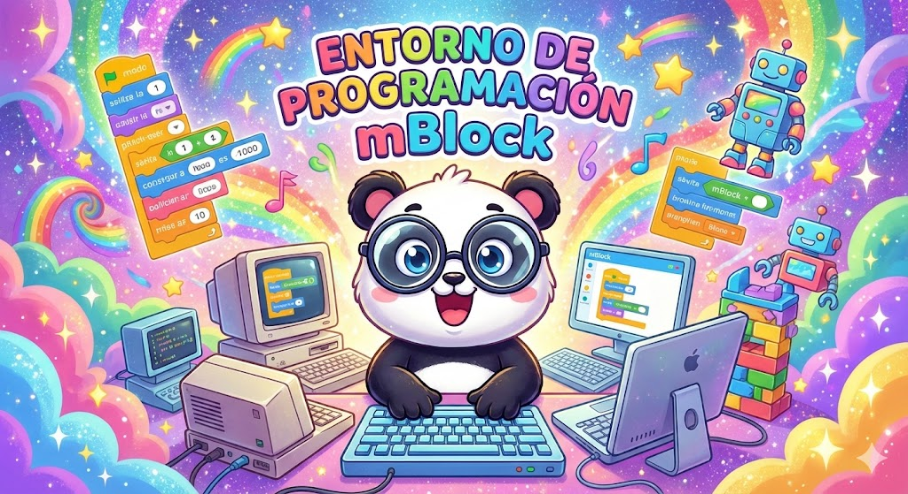
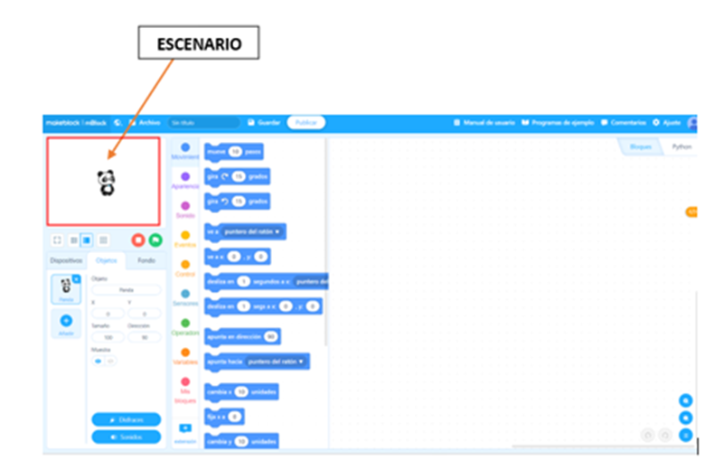
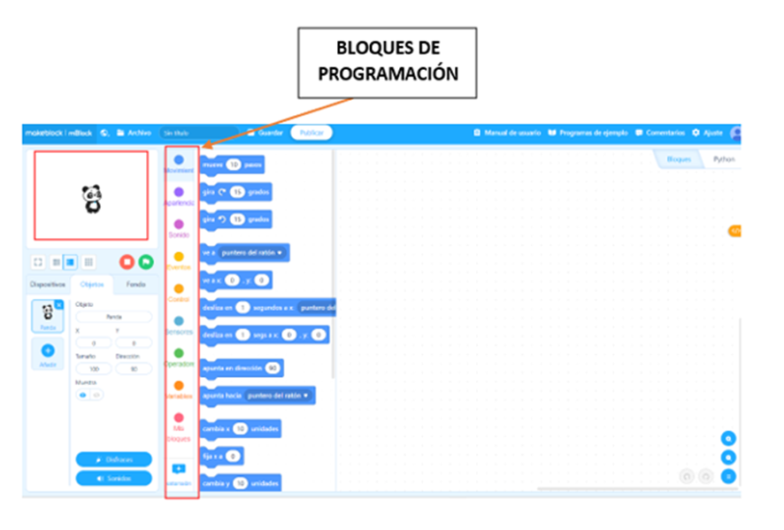
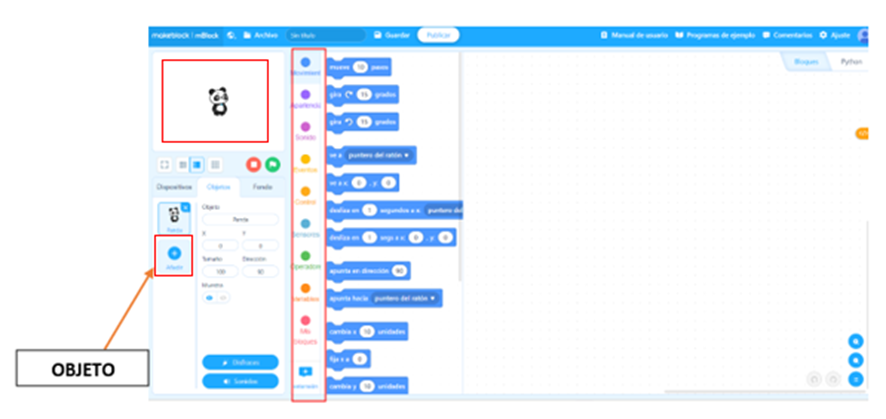
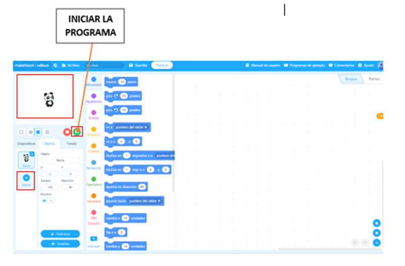
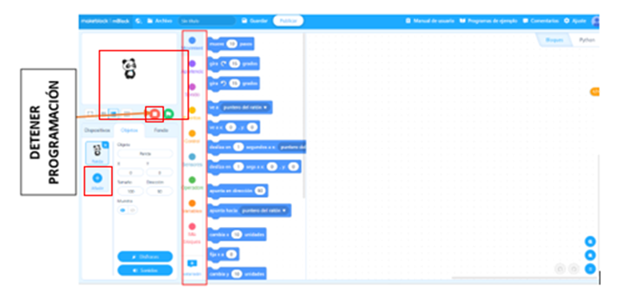
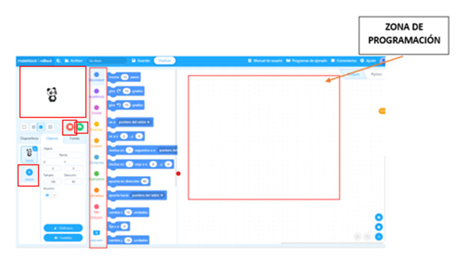

Entorno de programación
Entorno de programación

Figura 3. Generada por IA (Gemini)
La herramienta mBlock es un entorno de desarrollo visual basado en Scratch 2.0, el entorno de programación facilita el aprendizaje y promueve el desarrollo de habilidades cognitivas, (Ochoa y Bedregal, 2021).
Escenario
El escenario es la parte donde está colocado el panda. El panda en mBlock es lo que se conoce como «sprite».

Figura 4. Elaboración propia
Bloques de programación
Los bloques de programación constan de 9 donde podemos encontrar (movimiento, apariencia, sonido, eventos, control, sensores, operadores, variables), permitiendo una programación ya sea animación, juego o actividad.

Figura 5. Elaboración propia
Objeto
Es la parte donde se puede cambiar un personaje, objeto o sprite.

Figura 6. Elaboración propia
Iniciar programación
Es el ícono de color verde donde al presionar la banderita verde daremos inicio a la programación.

Figura 7. Elaboración propia
Detener programación
Es el ícono de color rojo que al dar clic nos permite detener la programación.

Figura 8. Elaboración propia
Zona de programación
Es la parte donde se encajan los bloques de programación y generan un código a simular.

Figura 9. Elaboración propia